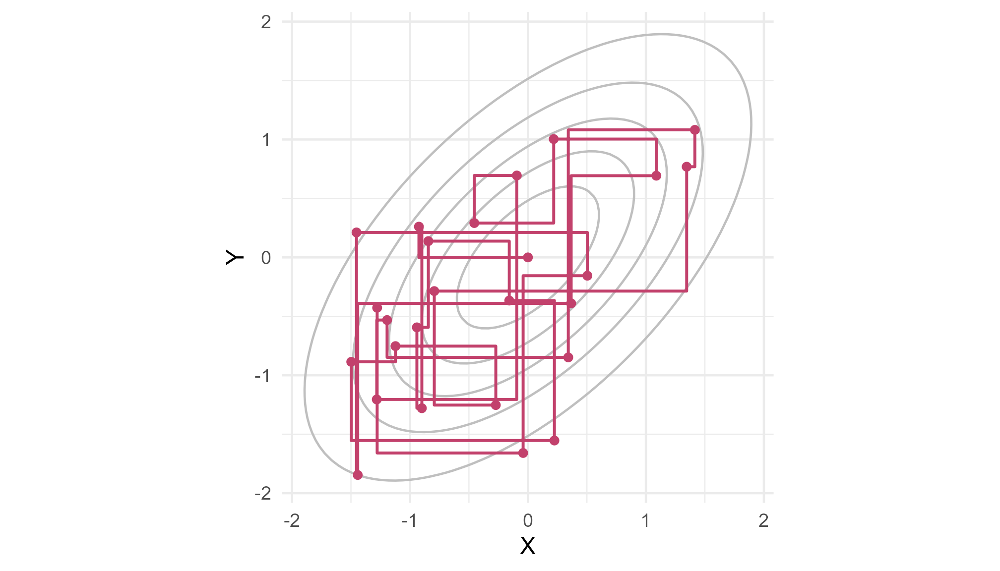

Module 4 · Lesson 12 of 14 Week 72 of 160 About 5–7 hours
Gibbs sampling
One parameter at a time, and filling in the missing data
Sample a posterior by drawing each parameter from its full conditional distribution in turn. Start with a bivariate normal, then estimate the lab’s bias on a certified reference material with a normal model of unknown mean and SD. Use data augmentation to handle results below a detection limit, the Bayesian twin of EM, and see why highly correlated parameters mix slowly and how blocking fixes it.
The Metropolis algorithm of Lesson 11 proposes a random step and sometimes rejects it. For many models, there’s a smarter way. Often the posterior of all the parameters together is complicated, but the posterior of one parameter, with all the others held fixed, is a familiar distribution that R can sample directly. Gibbs sampling takes advantage of that: it updates the parameters one at a time, each drawn from its full conditional distribution, given the data and the current values of all the others. Every draw is accepted. Repeat, and the chain’s stationary distribution is the full posterior.
Named after the physicist Josiah Willard Gibbs by the brothers Geman, who used it to restore noisy images in 1984, it made Bayesian statistics practical in the 1990s. It’s the engine inside software such as BUGS and JAGS.
Gibbs is like adjusting a shower with two taps: fix the cold, adjust the hot, fix the hot, adjust the cold… One knob at a time, and you get there!
In this lesson you’ll:
- write a Gibbs sampler for a bivariate normal distribution
- estimate a mean and an SD together, for the lab’s reference material
- answer the auditor’s question with posterior probabilities
- use data augmentation for results below a detection limit
- see why strong correlation slows Gibbs sampling down, and how blocking helps
One coordinate at a time
Start with a target you can check: two standard normal variables X and Y with correlation \rho. Their full conditionals are normal (it’s a property of the multivariate normal, from Lesson 3.3):
X \mid Y = y \;\sim\; N\!\left(\rho y,\; 1 - \rho^2\right), \qquad Y \mid X = x \;\sim\; N\!\left(\rho x,\; 1 - \rho^2\right).
So a Gibbs sampler alternates: draw X given the current Y, then Y given the new X, and so on. Each move is parallel to one axis, so the chain moves in a staircase:
set.seed(4127)
x <- 0; y <- 0; path <- data.frame(x = 0, y = 0)
for (i in 1:25) {
x <- rnorm(1, 0.6 * y, sqrt(1 - 0.36)); path <- rbind(path, c(x, y))
y <- rnorm(1, 0.6 * x, sqrt(1 - 0.36)); path <- rbind(path, c(x, y))
}
grid <- expand.grid(x = seq(-3, 3, length.out = 100), y = seq(-3, 3, length.out = 100))
grid$d <- exp(-(grid$x^2 - 1.2 * grid$x * grid$y + grid$y^2) / (2 * 0.64))
ggplot(grid, aes(x = x, y = y)) +
geom_contour(aes(z = d), bins = 6, color = "grey75") +
geom_path(data = path, color = "#C2416C", linewidth = 0.7) +
geom_point(data = path[seq(1, nrow(path), by = 2), ], color = "#C2416C", size = 1.6) +
coord_equal() +
labs(x = "X", y = "Y") +
theme_minimal(base_size = 12)
Your turn. Run 5,000 rounds of the Gibbs sampler for \rho = 0.6, and check the correlation of the draws.
Y’s conditional mean is \rho x, using the new x.
rho <- 0.6
set.seed(4121)
xs <- ys <- numeric(5000)
x <- 0; y <- 0
for (i in 1:5000) {
x <- rnorm(1, rho * y, sqrt(1 - rho^2)) # X given the current Y
y <- rnorm(1, rho * x, sqrt(1 - rho^2)) # Y given the new X
xs[i] <- x; ys[i] <- y
}
c(correlation = cor(xs, ys), mean_x = mean(xs), sd_x = sd(xs))A correlation of 0.599, a mean of −0.04 and an SD of 0.99: a sample from the right bivariate normal, built from nothing but one-dimensional normal draws.
The reference material
Lesson 7’s audit question comes back. The lab analyzed a certified reference material, whose iron content is certified as 50.0 mg/kg, 15 times:
iron
#> [1] 52.43 50.64 50.35 53.27 52.10 49.34 50.76 50.09 51.44 50.13 50.38 52.95
#> [13] 49.83 51.38 51.28The mean is 51.09. Is the method biased, and by how much? Model the results as N(\mu, \sigma^2), with both \mu and \sigma unknown. It’s convenient to work with the precision \tau = 1/\sigma^2. With a normal prior for \mu and a gamma prior for \tau, the full conditionals are:
\mu \mid \tau, \mathbf{y} \sim N(m, v), \qquad v = \frac{1}{1/s_0^2 + n\tau}, \quad m = v\left(\frac{\mu_0}{s_0^2} + \tau \sum y_i\right),
\tau \mid \mu, \mathbf{y} \sim \text{Gamma}\!\left(a_0 + \frac{n}{2},\; b_0 + \frac12 \sum (y_i - \mu)^2\right).
The first says: given the precision, the posterior mean of \mu is a precision-weighted average of the prior mean \mu_0 and the data. The second: given \mu, the precision is set by the sum of squared deviations from it. We’ll use vague priors that let the data speak: \mu_0 = 50 with s_0 = 10 mg/kg, and a_0 = b_0 = 0.01. (Module 5 derives these, and discusses choosing priors.)
Your turn. Complete the Gibbs sampler, run 5,000 rounds, and drop 500 as burn-in.
The deviations are from the current mu.
mu0 <- 50; s0 <- 10
n <- length(iron)
set.seed(4122)
draws <- matrix(NA, 5000, 2, dimnames = list(NULL, c("mu", "sigma")))
mu <- mean(iron); tau <- 1 / var(iron)
for (i in 1:5000) {
v <- 1 / (1 / s0^2 + n * tau)
m <- v * (mu0 / s0^2 + tau * sum(iron))
mu <- rnorm(1, m, sqrt(v)) # mu given tau
tau <- rgamma(1, a0 + n / 2, b0 + sum((iron - mu)^2) / 2) # tau given mu
draws[i, ] <- c(mu, 1 / sqrt(tau))
}
keep <- draws[-(1:500), ]
c(mu = mean(keep[, "mu"]), quantile(keep[, "mu"], c(0.025, 0.975)), sigma = mean(keep[, "sigma"]))The posterior mean of \mu is 51.10 mg/kg, with a 95% credible interval from 50.46 to 51.75, and \sigma is about 1.24 mg/kg. The t-interval of Module 0 gives 50.44 to 51.74: with vague priors, the Bayesian and the classical answers nearly agree. Here, the draws are almost independent: their effective sample size is about 4,500 out of 4,500.
The posterior gives direct answers to the auditor’s questions. The lab’s bias is \mu - 50.0, and with draws of \mu, the posterior of the bias, and the probability that the method reads high, are one line each.
Your turn. The setup code has the sampler as a function, gibbs_normal(y, n_iter, mu0, s0). Find the posterior mean bias, its 95% credible interval, and the probability that the method reads high.
The method reads high when the bias is above 0.
set.seed(4122)
keep <- gibbs_normal(iron, 5000, mu0 = 50, s0 = 10)[-(1:500), ]
bias <- keep[, "mu"] - 50.0
c(bias = mean(bias), quantile(bias, c(0.025, 0.975)), p_reads_high = mean(bias > 0))A bias of +1.10 mg/kg, between 0.46 and 1.75, and a 99.8% posterior probability that the method reads high. That’s a statement the auditor can use directly: “the method almost certainly reads about 2% high, so correct the results or recalibrate”. A p-value can’t be phrased that way.
Data augmentation
Lesson 10’s toluene results had 13 values below the 5 ppm detection limit. EM filled them in with their expected values. The Gibbs way, called data augmentation, treats the missing values as extra unknowns, and draws them too:
- Impute: draw each censored value from its full conditional: the normal N(\mu, \sigma^2), truncated to values below 5 ppm.
- Update: with the data now complete, draw \mu and \tau exactly as for the reference material.
Drawing from a truncated normal is Lesson 3’s inverse-transform method, as in Lesson 4’s second challenge: draw u uniformly between 0 and \Phi\big((5 - \mu)/\sigma\big), the CDF at the limit, and transform it back with qnorm().
Your turn. Write the imputation step as a function, and test it: 10,000 imputed values at \mu = 6 and \sigma = 2.5 should all be below 5, and their mean should match Lesson 10’s E-step, 3.33.
The upper end is the normal CDF at the limit, pnorm(L, mu, sigma).
impute <- function(k, mu, sigma) {
u <- runif(k, 0, pnorm(L, mu, sigma)) # uniform below the CDF at the limit
qnorm(u, mu, sigma)
}
set.seed(4123)
z <- impute(10000, 6, 2.5)
c(largest = max(z), mean = mean(z))Every value is below 5 ppm (the largest is 4.9995), and their mean is 3.33, the same as Lesson 10’s E[X \mid X < 5]. EM uses the average, and data augmentation uses random draws whose average it is.
Your turn. Now the full data-augmentation sampler for the toluene, with vague priors (\mu_0 = 5, s_0 = 10). Complete the line that joins the detected and the imputed values.
Join the detected results and the imputed ones, z.
impute <- function(k, mu, sigma) qnorm(runif(k, 0, pnorm(L, mu, sigma)), mu, sigma)
mu0 <- 5; s0 <- 10
set.seed(4124)
draws <- matrix(NA, 5000, 2, dimnames = list(NULL, c("mu", "sigma")))
mu <- mean(detected); tau <- 1 / var(detected)
for (i in 1:5000) {
z <- impute(n_below, mu, 1 / sqrt(tau)) # 1. impute the 13 censored results
y <- c(detected, z) # the completed data
n <- length(y)
v <- 1 / (1 / s0^2 + n * tau); m <- v * (mu0 / s0^2 + tau * sum(y))
mu <- rnorm(1, m, sqrt(v)) # 2. update mu and tau
tau <- rgamma(1, a0 + n / 2, b0 + sum((y - mu)^2) / 2)
draws[i, ] <- c(mu, 1 / sqrt(tau))
}
keep <- draws[-(1:500), ]
c(mu = mean(keep[, "mu"]), quantile(keep[, "mu"], c(0.025, 0.975)), sigma = mean(keep[, "sigma"]))The posterior mean toluene level is 6.18 ppm, with a 95% credible interval from 5.20 to 7.03, and \sigma about 2.62 ppm. EM gave 6.22 and 2.48: the same picture, plus an honest interval that includes the uncertainty about the 13 missing values. (The posterior mean of \sigma is a little above the maximum likelihood estimate, as usual for a scale parameter with 40 observations.)
When Gibbs is slow: blocking
Gibbs sampling moves parallel to the axes. When two parameters are strongly correlated in the posterior, the posterior is a narrow diagonal ridge, and axis-parallel steps can only inch along it. Each draw is then almost the same as the last, and the chain explores slowly.
Your turn. Run the bivariate normal sampler again with \rho = 0.99, and compare the effective sample size of its 5,000 draws of X with 5,000 independent draws.
Draw 5,000 standard normals: rnorm(5000).
rho <- 0.99
set.seed(4125)
xs <- numeric(5000)
x <- 0; y <- 0
for (i in 1:5000) {
x <- rnorm(1, rho * y, sqrt(1 - rho^2))
y <- rnorm(1, rho * x, sqrt(1 - rho^2))
xs[i] <- x
}
independent <- rnorm(5000) # 5,000 independent draws of X
c(ess_gibbs = coda::effectiveSize(xs), ess_independent = coda::effectiveSize(independent))The Gibbs chain’s 5,000 draws are worth about 58 independent ones: a correlation of 0.98 between successive draws. With \rho = 0.6, the same sampler gives an effective sample size of about 2,300. Independent draws are worth about 5,000, as they should be.
The fixes all aim to stop moving along the axes. Blocking draws the correlated parameters together, from their joint conditional distribution, when that’s possible: here, drawing (X, Y) jointly from the bivariate normal gives independent draws. Reparameterizing changes the parameters so that they’re less correlated, such as centering a predictor in a regression (Lesson 2.11). And Metropolis steps with correlated proposals (Lesson 11’s last practice exercise) follow the ridge instead of crossing it.
NoteGo deeper: Gibbs is a special case of Metropolis-Hastings
A Gibbs update of one parameter is a Metropolis-Hastings step whose proposal is that parameter’s full conditional distribution. Plug that proposal into the Hastings acceptance ratio, \frac{\pi(\theta^*)\, q(\theta^* \to \theta)}{\pi(\theta)\, q(\theta \to \theta^*)}, and everything cancels to exactly 1, which is why Gibbs never rejects. When some full conditionals aren’t standard distributions, you can mix the two: Gibbs steps for the parameters with easy conditionals, and Metropolis steps for the rest. That’s called Metropolis-within-Gibbs, and it’s how many real samplers work.
Challenge round
Challenge 1 · The next analysis. The posterior predictive distribution describes a future observation, with all the uncertainty about \mu and \sigma included. Simulate it: for each posterior draw, draw one new analysis from N(\mu, \sigma^2). What’s the chance that the next analysis of the reference material reads above 53 mg/kg, the lab’s alarm limit?
Use each draw’s own SD, keep[, "sigma"].
set.seed(4122)
keep <- gibbs_normal(iron, 5000, mu0 = 50, s0 = 10)[-(1:500), ]
set.seed(4126)
y_new <- rnorm(nrow(keep), keep[, "mu"], keep[, "sigma"])
c(quantile(y_new, c(0.025, 0.975)), p_over_53 = mean(y_new > 53))The next analysis will be between 48.5 and 53.6 mg/kg with 95% probability, almost the same as the classical prediction interval for a new observation, \bar y \pm t_{0.975,\,14}\, s\sqrt{1 + 1/15}, which runs from 48.5 to 53.7. There’s a 6% chance that the next analysis trips the alarm at 53. If the alarm is meant to catch a broken method, it will raise a false alarm about once in 16 analyses of a working one, partly because of the bias.
Challenge 2 · How many batches are over the limit? A customer’s specification allows at most 10 ppm of toluene. For each posterior draw of (\mu, \sigma) from the data-augmentation sampler, compute the share of batches above 10 ppm, 1 - \Phi\big((10 - \mu)/\sigma\big), and summarize its posterior.
The specification limit is 10 ppm.
set.seed(4124)
keep <- augmented_draws(5000)[-(1:500), ] # the setup code's version of your sampler
p_over_10 <- 1 - pnorm(10, keep[, "mu"], keep[, "sigma"])
c(mean = mean(p_over_10), quantile(p_over_10, c(0.025, 0.975)))About 7.4% of batches are over 10 ppm, but it could be anywhere from 2.4% to 15.6%. Plugging in Lesson 10’s maximum likelihood estimates gives a single number, 6.4%, with no sense of its uncertainty. In the data, 2 of the 40 batches were over 10 ppm, which is consistent. A nonlinear quantity like this one gets its full posterior for free from the draws.
Quick quiz
1. What does a Gibbs sampler draw at each step?
Every draw is accepted.
2. In the normal model, what is \mu’s full conditional posterior mean?
With a vague prior (s_0 large), the data dominate, and it’s close to the sample mean.
3. What’s the difference between EM and data augmentation for censored values?
Both fill in the missing values from their conditional distribution, one with its average and one with draws.
4. Why does Gibbs sampling slow down when two parameters are highly correlated?
With \rho = 0.99, 5,000 draws were worth about 58.
5. What is blocking?
It removes the zigzag along the ridge.
6. How do you get the posterior of a quantity such as the share of batches above 10 ppm?
Plugging in posterior means gives a single number. The draws give the whole distribution.
Wrap-up
You can now sample posteriors one parameter at a time. Here’s what you’ve learned:
- Gibbs sampling draws each parameter from its full conditional distribution in turn, and never rejects.
- The normal model: \mu is normal given \tau, and \tau is gamma given \mu. The lab’s method reads 1.10 mg/kg high (0.46 to 1.75), with a 99.8% posterior probability of reading high.
- Data augmentation draws the missing values too: below a detection limit, from a truncated normal by inversion. The toluene mean is 6.18 ppm (5.20 to 7.03), close to EM’s 6.22, with honest uncertainty.
- Posterior summaries of anything: the next analysis reads above 53 with a 6% chance, and 7.4% of batches (2.4% to 15.6%) exceed 10 ppm.
- Slow mixing: with strongly correlated parameters, Gibbs moves in tiny steps. Block, reparameterize, or use better Metropolis proposals.
TipPractice in RStudio (optional, about an hour)
Download qc_repeats.csv and impurity_lod.csv into your project’s data-raw/ folder.
- An informative prior. The method’s validation report says its bias is 0 \pm 0.5 mg/kg. Use \mu_0 = 50 and s_0 = 0.5, and rerun the reference material sampler. How far does the posterior bias move toward 0? How much would more analyses help?
- Blocking for real. Write a sampler for the bivariate normal with \rho = 0.99 that draws (X, Y) jointly in each step (draw X from its marginal, N(0, 1), and then Y given X). Compare its trace plot with the one-at-a-time sampler’s.
- A mixture, the Gibbs way. Write a Gibbs sampler for Lesson 10’s two-component crystal mixture: draw each crystal’s label (fine or not) from its responsibility, then p from a beta distribution, and each component’s mean and precision given its crystals. Compare the posterior means with EM’s estimates. Watch out for label switching.
- JAGS. If you’d like a preview of Module 5, install JAGS and the
rjagspackage, and fit the reference material model in the BUGS language. It writes the Gibbs sampler for you.
NoteKey words from this lesson
- Gibbs sampling
- An MCMC method that updates each parameter in turn by drawing from its full conditional distribution.
- Full conditional distribution
- The distribution of one parameter given the data and the current values of all the other parameters.
- Precision
- One over the variance, \tau = 1/\sigma^2, which often makes formulas simpler.
- Data augmentation
- Treating missing or censored values as unknowns and drawing them inside a Gibbs sampler.
- Posterior predictive distribution
- The distribution of a future observation, averaged over the posterior uncertainty in the parameters.
- Blocking
- Updating several correlated parameters together, from their joint conditional distribution.
- Metropolis-within-Gibbs
- A sampler that uses Gibbs steps for some parameters and Metropolis steps for others.
NoteWant to read more?
- Roger Peng, Advanced Statistical Computing, section 7.3, “Gibbs sampler”. The bivariate normal and the normal model with unknown mean and variance, as in this lesson, and Gibbs as a case of Metropolis-Hastings.
- Andrew Gelman and others, Bayesian Data Analysis (3rd edition), free PDF on the book’s site, section 11.1, “Gibbs sampler”, and chapter 12 on making samplers efficient.
- George Casella and Edward George, “Explaining the Gibbs sampler”, The American Statistician (1992). A short, classic introduction, with the bivariate examples.